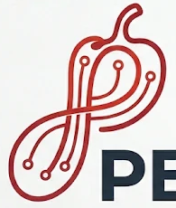
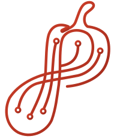
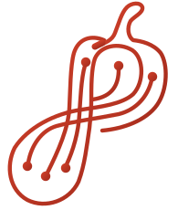
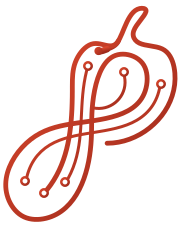

Pagina temporanea di confronto
Logo: prima e dopo

0 · Originalela bozza scelta nel PDF

A · Primaricalco vettoriale fedele, nodi ad anello

B · Pallini pieniscartata

C · Nuovocurve morbide, linee del peperone più spesse delle piste, anelli, ricciolo ridisegnato